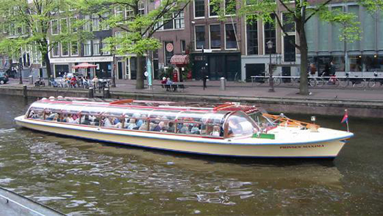
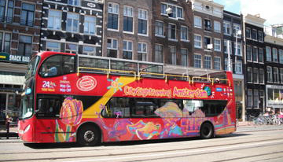

Most Popular
CANALS CRUISE Cruise around Amsterdam’s canals in the evening, and pair a decadent 4-course dinner – cooked on board – with sights of the city. As one of the few Amsterdam sightseeing boats to offer meals that are freshly prepared and cooked on board. |
HOP-ON HOP-OFF TOUR There is no better way to see Amsterdam than on a double-decker, hop-on hop-off bus! See top Amsterdam attractions on this comprehensive sightseeing tour, such as the National Maritime Museum, Heineken Experience, the Anne Frank House and much more. |
BIKE TOUR
Explore Amsterdam the ‘Dutch way’ – by bike! Following an expert local guide, enjoy a leisurely 2- or 3-hour bike ride around Amsterdam’s typically flat and open city streets – perfect for cycling! Passing alongside the city’s charming canals. |